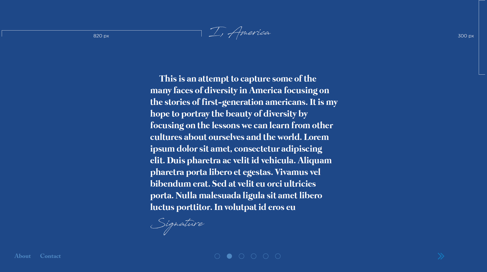
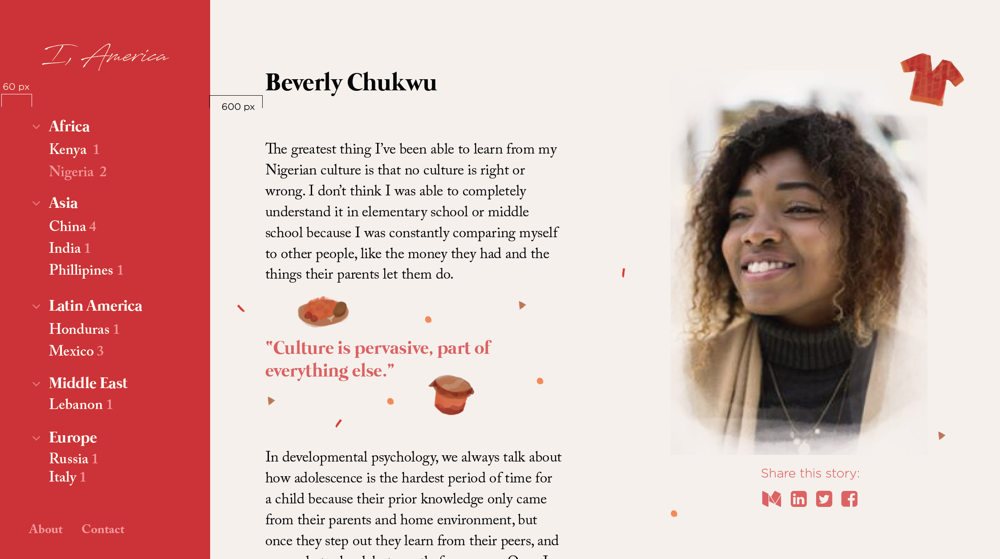
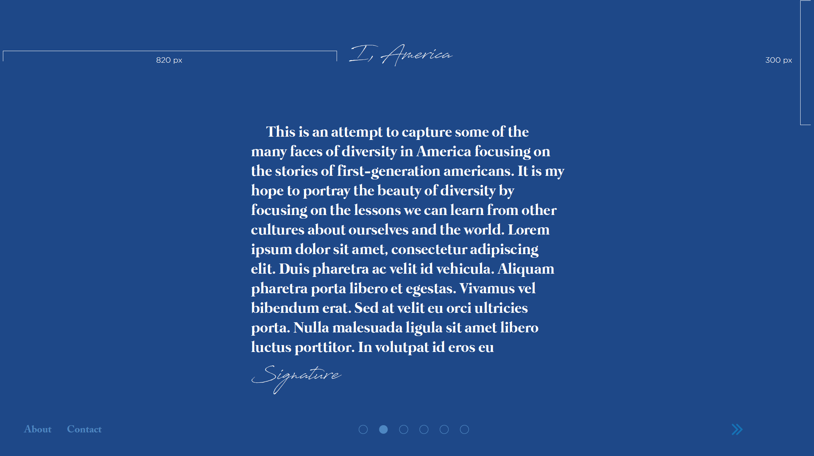
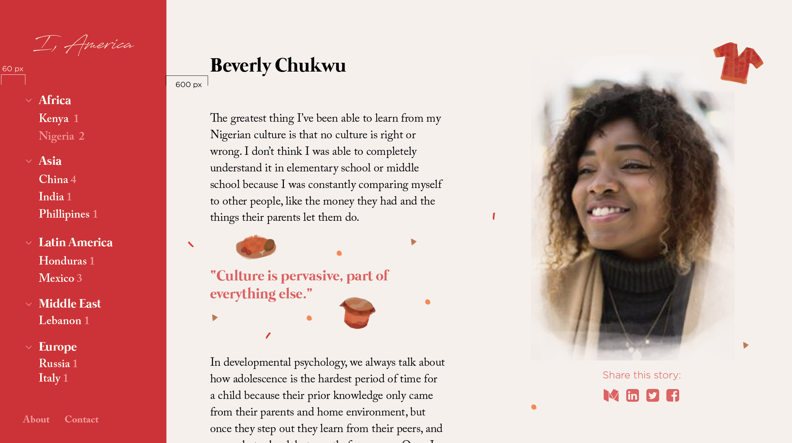

I, America
goal
To narrate the cultural experiences of second-generation Americans
I wanted to not only capture their stories but also create a unique space on the web to tell them in a rich, interactive way.
background
As a girl who has lived my entire life in America with Chinese parents, I grew up feeling ashamed of my heritage until I studied abroad and realized that all cultures are beautiful, that none are right or wrong. When I came back to America, I realized that every individual’s story with culture is so fascinating, yet it hardly comes up in conversation due to its sensitive nature. I wanted to learn more about others’ cultural experiences while simultaneously developing a way for others to also learn about their stories and empathize with them.
approach
Due to the sensitive nature of the topic, I started by reaching out to a few individuals in my network who demonstrated potential interest in the subject. I set up an hour of time to interview them, specifically focusing on their experiences growing up with immigrant parents in America. After the hour, I attempted to photograph the most natural expression I could. At first I shared the photos on facebook with our immediate networks, and people outside of my network instantly reached out to me with their own stories, or even requests to share. From there, it took off. I also needed to make sure I talked to people of diverse backgrounds to be representative of the different cultures in America.
writing
Although I conducted “interviews” with individuals, I felt that a simple Q&A format did not have the capacity to communicate the intricacies and layers of emotions that people feel about such a crucial part of their identity. I chose to write each story in the first person, stepping into each subject’s shoes in order to write a more compelling story. This was more difficult than simply transcribing the questions and subsequent responses; I had to listen carefully and ask probing questions in order to ensure I interpreted a response correctly, without bias.
photography
Although stories are inherently personal, I saw from Humans of New York and The Techies Project that combining the two mediums of writing and photography prompted greater empathy by putting a person’s face to the story. I decided to incorporate my experience with portrait photography to complement the stories I was writing. I used a Nikon D80 with a 50mm f/2.8 prime lens in order to produce a creamy, ethereal bokeh with a shallow depth of field.
design
I asked Esther Amaku to collaborate on the visual design after seeing her illustrative work. I knew that with such a sensitive topic, a ‘minimalist’ approach would not fit the tone of the material, and knew that her background and interest in illustration would be invaluable in determining the look and feel of the site.
We decided to highlight the narrative aspect of the experience by aiming to recreate an interactive experience that we are all familiar with: reading a story book. Esther chose a warm color palette along with font faces that would translate well into a digital storytelling experience. Throughout the mockups, she stressed an incorporation of illustration and hand-drawn elements in order to communicate trust and warmth.
 
development
I worked to translate the high-fidelity mockups that Esther created into frontend code, using Bourbon Neat as the framework for a responsive grid, SASS for reusable code components, and gulp to streamline the workflow. I used jQuery for animations.
>> See the ongoing project here on Github
goals
This project is far from over. I see so much potential to expand this project to record stories of people all over the United States. I would love to grow a following on social media and continually post new stories that people can share. The goal is for this message to reach as many people as possible, to touch as many lives as I can.